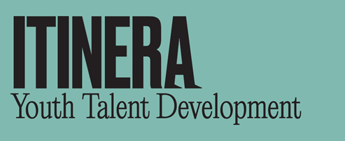
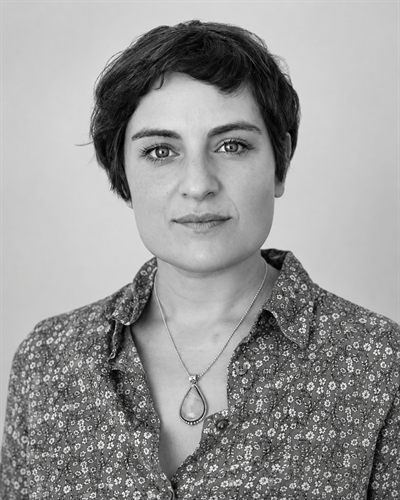
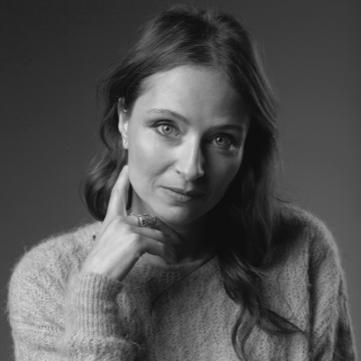

Sant Cugat del Vallès
Dimecres tarda
De 16:30 a 18 h.
Del 30 de setembre al 16 de desembre del 2026.
Escriure a Anna
Programa per a joves, famílies i futur
Itinera acompanya joves d’ESO, Batxillerat, Cicles formatius i universitat a conèixer-se millor, entrenar habilitats personals i socials, i construir un pla d’acció realista.
Inscripcions obertes
Ja tenim calendari per als primers grups d'Itinera. Escriu-nos i t'informarem del format més adequat.
De 16:30 a 18 h.
Del 30 de setembre al 16 de desembre del 2026.
Escriure a Anna2 dissabtes tarda al mes, de 16 a 19 h.
Sessions online o presencials per treballar objectius, presa de decisions i properes passes.
El programa
Itinera combina autoconeixement guiat, entrenament de competències transversals i l’elaboració d’un itinerari personal amb objectius, passos i indicadors de seguiment.
Joves en moments de canvi, elecció d’estudis, desmotivació, excés d’opcions o necessitat d’orientació.
Perquè el futur professional demana criteri, creativitat, comunicació, flexibilitat i habilitats humanes.
Construir un pla d’acció sostenible que ajudi cada participant a avançar amb més autonomia i seguretat.
Dossier del projecte
Descarrega el dossier d’Itinera amb la informació completa sobre objectius, metodologia, modalitats, ubicacions i equip impulsor.
Què s’emporta cada participant
Exercicis, dinàmiques i plantilles per treballar l’autoconeixement i les habilitats clau.
Un pla d’acció final amb objectius, passos, timings i indicadors d’autoseguiment.
Síntesi del procés, fortaleses detectades, focus de creixement i recomanacions de continuïtat.
Metodologia
Les habilitats s’entrenen. Per això combinem treball individual, dinàmiques de grup i experiències vivencials que es poden aplicar al dia a dia.
Valors, interessos, fortaleses i reptes per definir un rumb propi.
Un espai segur per contrastar mirades i entrenar comunicació, cooperació i assertivitat.
Experiències en primera persona per transformar aprenentatges en recursos pràctics.
Modalitats
12 sessions de 1,5 hores, una tarda per setmana.
8 sessions de 4 hores, durant 15 dies.
2 dissabtes a la tarda al mes, durant 3 mesos. 6 dissabtes tarda en total.
Sessions online o presencials d’orientació i pla d’acció.
Qui som

Cofundadora d’Itinera. Sociòloga, llicenciada en Art Dramàtic i Màster en Psicopedagogia. Docent universitària i especialista en habilitats professionals, metodologies creatives i acompanyament socioeducatiu.

Cofundadora d’Itinera. Directora de projectes, docent universitària i professional de la comunicació, la producció audiovisual i el lideratge d’equips. Aporta rigor, mirada pràctica i experiència en mentoria.
Veure perfil professionalTestimonis
“A Itinera he trobat un lloc on puc ser jo mateixa de veritat: parlar, fer broma i expressar-me sense por ni crítiques.”
Onaia, 15 anys
“La meva filla ha trobat un espai segur i guiat on identificar què sent, posar-hi paraules i aprendre a gestionar-ho.”
José, pare d’una alumna
“És el meu moment de la setmana per ser jo mateix, relaxar-me i desconnectar de la pressió dels exàmens.”
Kaelan, 16 anys
Contacte
Escriu-nos i explica’ns l’edat del/la jove i en quin moment es troba. T’orientarem sobre el format més adequat i la propera reunió informativa.
itineratalent@itineratalent.com